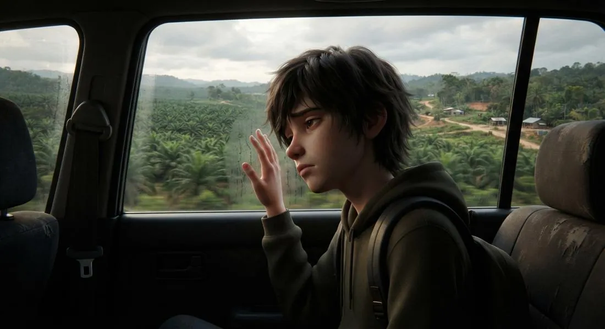

The generator decides.

I pressed my forehead against the cold car window and watched Borneo slide past: rows of oil palms, then mining sites, then more oil palms. I'd just spent two weeks in my grandma's village, Kandui, outside Muara Teweh. Electricity there came from one communal diesel generator. It ran a few hours a night. When it stopped, the village went dark.
On paper, Central Kalimantan is rich in energy. Coal reserves. An estimated 40,000 tonnes of palm-oil biomass every day. People call it a future renewable hub for Southeast Asia. So why was Kandui on a generator schedule?
Indonesia already generates more power than it uses. 3,264 villages are still unconnected because the transmission lines don't reach them. Hills, peat forest and swamp make the grid brutal to build, and there aren't enough engineers to build it anyway.
I left Kandui with that thought. It hasn't left me.